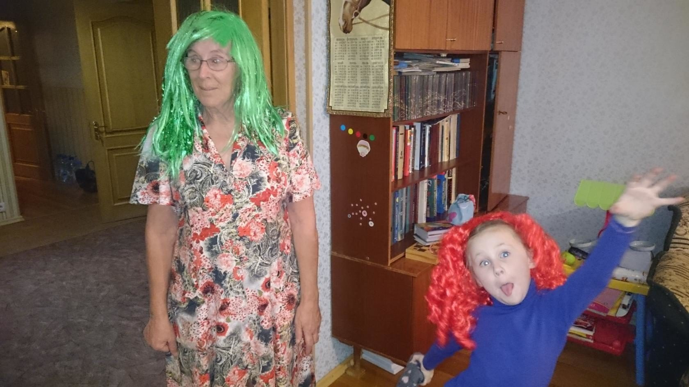
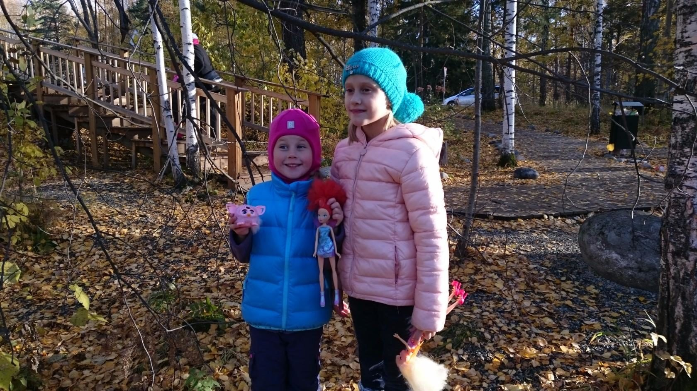
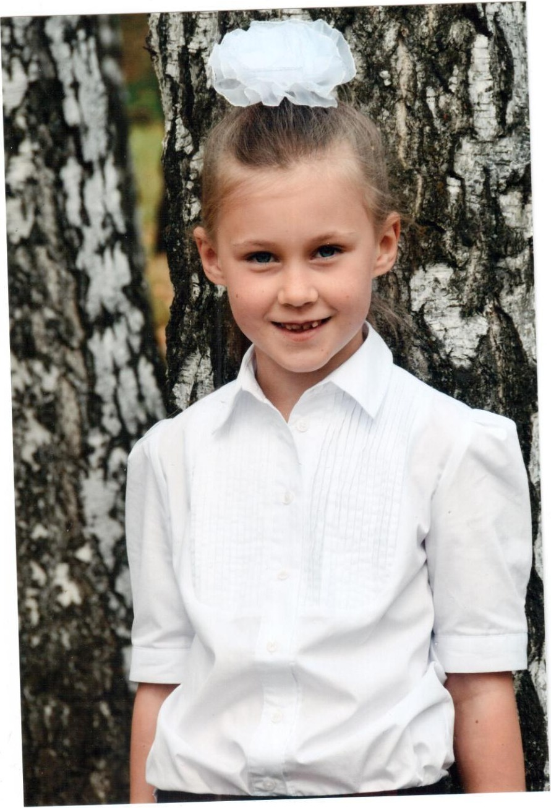
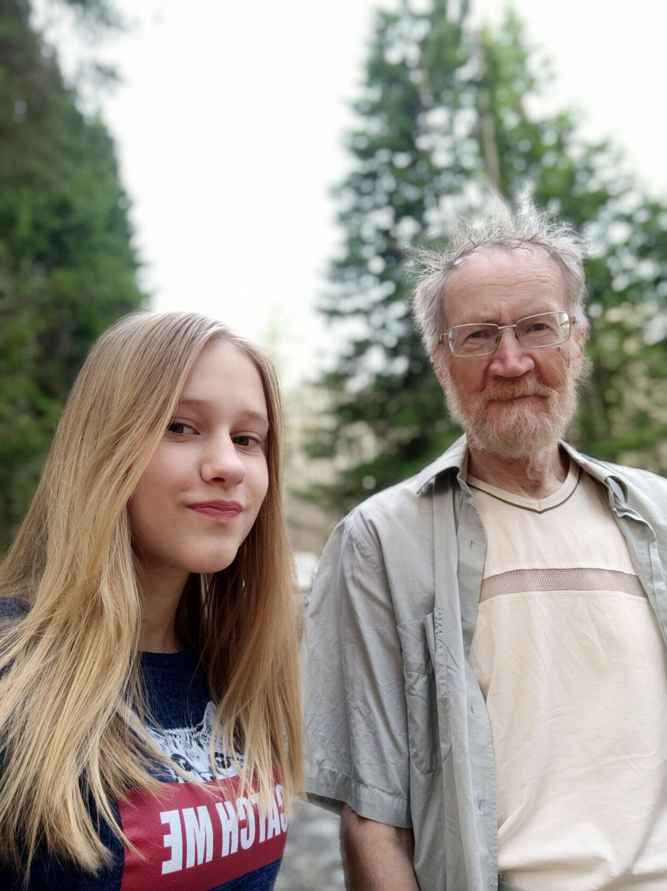

Кольцово
В Кольцово они посадили множество сосен и елей. На улице Кленовой растут дубы, которые были посажены их руками. Эти деревья продолжают жить и расти как часть их памяти на земле.
Лариса Петровна занималась садом практически до последних дней своей жизни.


Совсем рядом, в соседнем Краснообске, жили внуки — поездки туда были частью почти каждой недели.


Внучки



